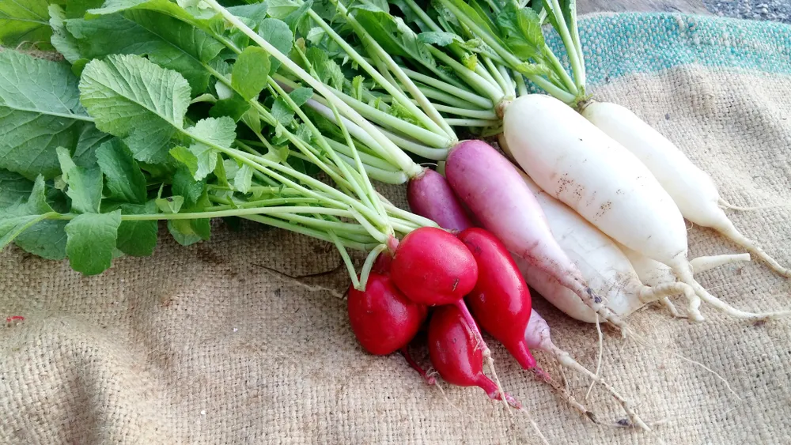

Homegrown Vegetables & Herbs with Serious Health Advantages

Growing your own vegetables and herbs has many health advantages. You don’t need to use pesticides, plus homegrown means they’re fresh and taste better than store bought because they’re chock full of vitamins and minerals that haven’t been stripped out through processing.
Gardening encourages relaxation and reconnects us with Mother Nature, and it’s a great way to teach your children about environmental responsibility and where their food comes from. So let’s take a look at some easy to grow vegetables and herbs to get your garden started …
Green (Bush) Beans
These delicious, easy to grow vegetables are packed full of nutrition. They contain vitamins A, C, K, manganese, potassium, folate, and iron. Plus green beans are rich in fiber.
These plants like well-drained soil and plenty of sunlight. They grow all season long and can provide you with a continual supply of fresh beans throughout the growing season. Bush beans are great cooked and can be combined in a stir fry with other vegetables.
Beets
Beets are one of several tasty root vegetables you can easily grow in your garden at home. They get their luscious red color from a substance called betanin, which is thought to improve the immune system. Just like beans, beets are packed full of fiber and vitamins.
Did you know that ½-cup of beets contains only 29 calories yet provides you with 2-grams fiber and a whopping 19-percent of your daily requirement of folate (vitamin B)? Not only that, but you can eat the baby beet greens in salads or cook the larger ones as a side dish.
Carrots
This root vegetable is sweet and nutritious. They can be eaten raw or cooked, in salads, soups, and stews or steamed. They add color and variety to any dish. You’ve probably heard that carrots are good for your eyes. That’s because they contain beta-carotene, which our bodies convert to vitamin A.
Not only that, carrots are rich in vitamin A, which plays an important role in keeping our eyes, skin, and immune system healthy. To grow carrots you simply plant them in fertile sandy loam, add water, and let nature do the rest.
Cucumbers
Cucumbers have a unique crunchy exterior and a mouth-watering, moist interior. They are great on their own, in salads, or even cooked. These unique vegetables may not be the nutrient packed power-houses of the vegetable world.
However, cucumbers are champions when it comes to hydration. Did you know that cucumbers are 95-percent water? Plus as an added bonus, they do contain a whole lot of fiber.
Lettuce
Lettuce is another easy to grow vegetable. The nutrient content will vary depending on the type of lettuce you plant. Leafy greens provide a good supply of vitamins A, C, K, folate, and fiber.
Leafy greens, like lettuce, grow best in cooler temperatures so be sure to plant it in the early spring and fall. Lettuce is great in salads or on sandwiches, in addition to offering vitamins and fiber, as well as being a low calorie food that helps you feel full and keeps your weight under control.
Sugar Snap Peas
These sweet green vegetables are delicious cooked in a side dish or eaten raw. You can shell them and eat the peas or leave them in the pod and eat the entire vegetable. Either way they are a treat.
One cup of sugar snap peas provides you with 1/3 of your daily vitamin C and 3-grams of fiber. These vegetables also like cooler weather and can thrive in soil temperatures as low as 40-degrees Fahrenheit.
Radishes
Another root vegetable, radishes are unlike beets because they’re only red on the outside and white on the inside. Radishes have a strong, crisp flavor and are great in salads, stir fry’s, or eaten raw on their own.
And at almost zero calories (one radish equals roughly only one calorie), these flavorful vegetables are ready for harvest in just three weeks. Cooler spring soil produces milder ones and hot summer soil gives you spicier ones.
Basil
Basil is a great herb that adds flavor and pizzazz to many dishes including pesto and pasta. It grows best in rich, dark soil with exposure to full sunlight.
If you sow your basil regularly, you will reap a continuous harvest over the growing season.
Dill
This is one of the most versatile herbs you can plant in your garden. The entire plant, leaves, seeds and all can be used to season your food. The leaves give a sweet flavor while the seeds give a crunchy, bitter flavor with a hint of citrus.
Dill is a summer plant that thrives in higher temperatures. It grows best in the 75- to 80-degree Fahrenheit temperature range. One of the best things about this herb is that you can use it fresh or dry it and use it throughout the remainder of the year.
Parsley
This aromatic herb doesn’t just smell good, it’s full of vitamin A and C as well. Parsley tastes great as a garnish and is another simple to plant and easy to grow addition for your garden.
If you plan to plant your own parsley at home, remember that this herb loves fertile, rich soil with lots of fertilizer and moisture.
Thyme
This herb is also high up on the versatility scale. Widely used to add flavor to meats, stews, and soups, thyme can also be used in a greater variety of dishes.
From use in hearty food such as meats, poultry and root vegetables to combining it with sweeter foods like apples and pears, any way you look at it, thyme is a great addition to your garden…and kitchen.
Mint
This herb is best known for its refreshing and sweet aroma. It’s easy to grow and can be used as a garnish or boiled into a tea. The peppermint flavor has been used to make candies for centuries.
Mint has a calming effect on the stomach and has long been used as a medicinal remedy to relieve heartburn, gas, and aid in digestion. In fact, did you know that race horse trainers feed their horses mints as it’s thought to help prevent stomach ulcers?
Source: https://activebeat.com/diet-nutrition/10-homegrown-vegetables-herbs-with-serious-health-advantages/